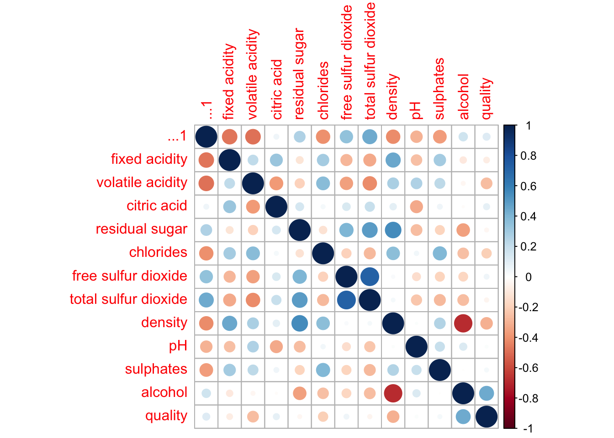
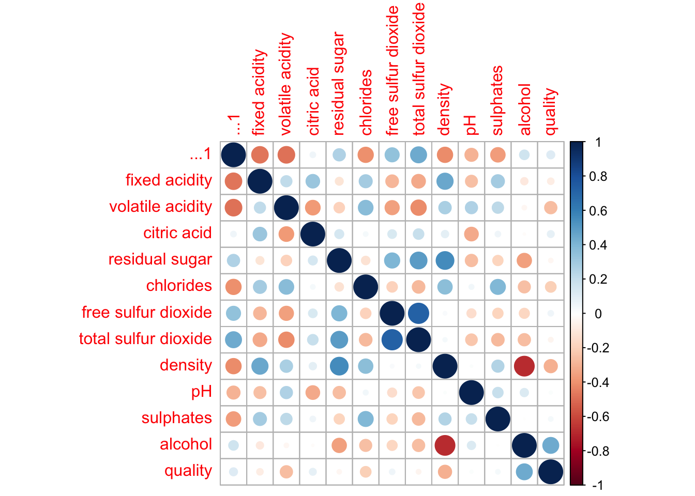
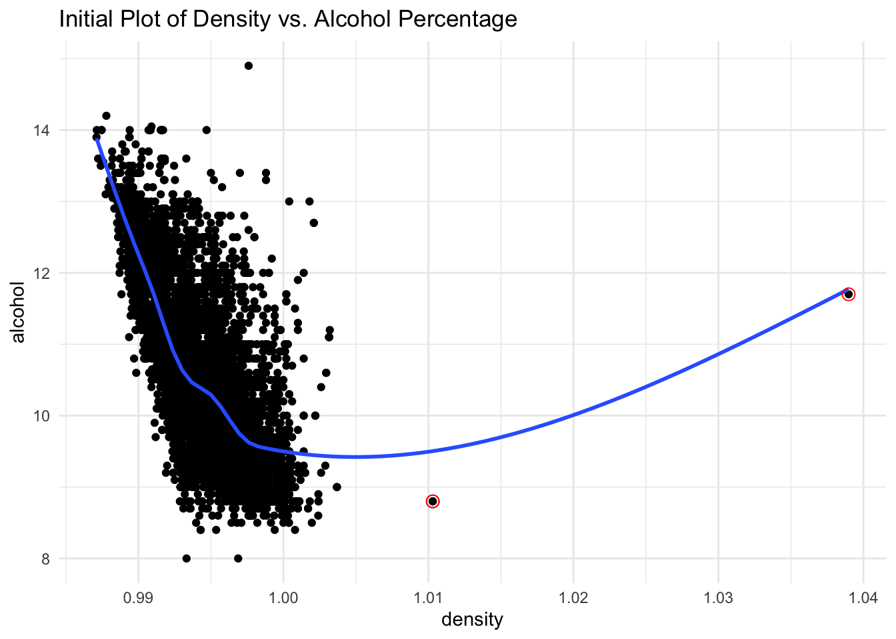
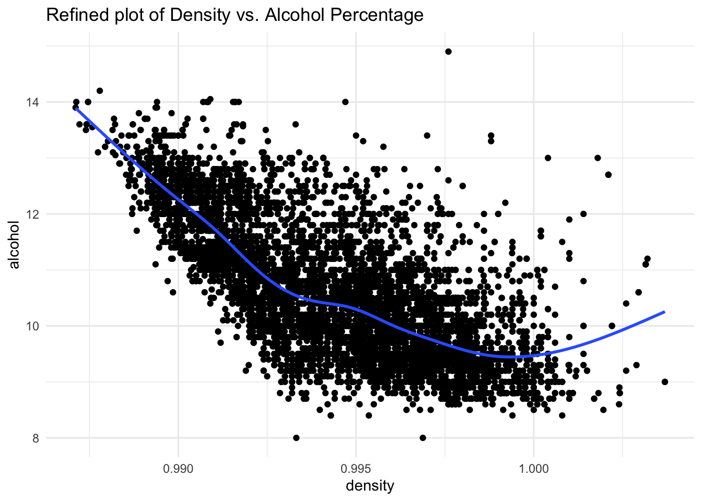
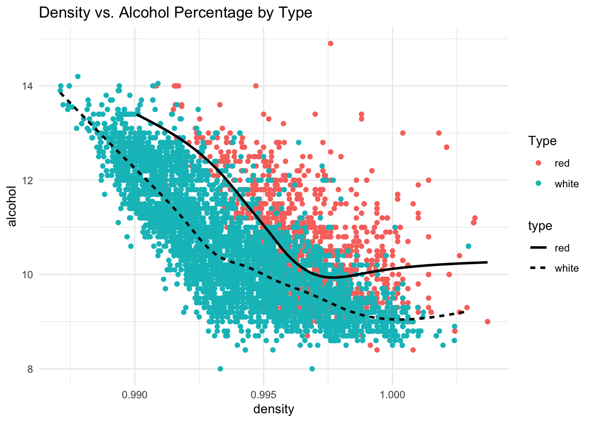
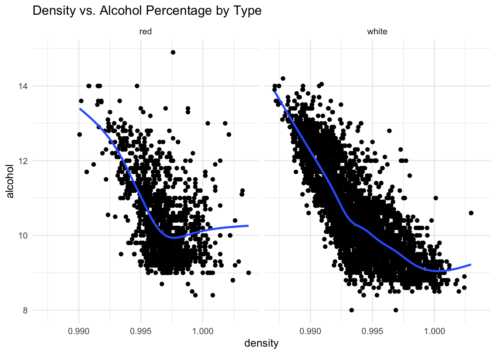

corrplot 0.92 loaded
[1] -0.6867454Jack Fay
February 9, 2024
I am working with the wines.csv data set from the data folder provided for this course. There ae 6497 observations and 14 variables in the data set. Specifically, I am interested in alcohol and density, and how the relationship differs by type of wine. My central question is whether or not this relationship will depend on the type of wine (white or red). Before altering the data set, the density and alcohol appear to have a strong negative association (r = -0.71), yet we will examine the intricacies behind this correlation.
corrplot 0.92 loaded
[1] -0.6867454wine_outliers <- wines%>%
filter(density > 1.005)
# Initial scatterplot
ggplot(data = wines,
aes(x = density, y = alcohol))+
geom_point()+
geom_smooth(se = FALSE)+
geom_point(data = wine_outliers, size = 3, shape = 1, color = "red")+
theme_minimal()+
labs(title = "Initial Plot of Density vs. Alcohol Percentage")`geom_smooth()` using method = 'gam' and formula = 'y ~ s(x, bs = "cs")'
This initial scatterplot shows a negative relationship between density and alcohol percentage with extreme curvature. The two clear outliers (denoted by red circles), make the plot visually unappealing as the points following the common trend are clumped together on the left side.
# Removing outliers
wines_refined <- wines%>%
filter(density < 1.005)
# Refined scatterplot
ggplot(data = wines_refined,
aes(x = density, y = alcohol))+
geom_point()+
geom_smooth( se = FALSE)+
theme_minimal()+
labs(title = "Refined plot of Density vs. Alcohol Percentage")`geom_smooth()` using method = 'gam' and formula = 'y ~ s(x, bs = "cs")'
Here, we see the same plot as above, yet without the two outlier data points seen previously. Visually, the plot is vastly improved and it has a much more realistic smoother that represents the trend with higher accuracy. Though we have removed the most extreme cases, we still see a moderate degree of curvature in the relationship.
# Scatterplot colored by type
ggplot(data = wines_refined,
aes(x = density, y = alcohol, color = type))+
geom_point()+
geom_smooth(aes(group = type, linetype = type), se = FALSE, color = "black")+
theme_minimal()+
labs(title = "Density vs. Alcohol Percentage by Type")+
guides(color = guide_legend(title = "Type", override.aes = list(linetype = c("solid", "dotted"))))`geom_smooth()` using method = 'gam' and formula = 'y ~ s(x, bs = "cs")'
In this plot, the data points are colored by type (red or white) and have separate respective smoother lines. Based on this visualization, it appears that red wines have higher alcohol percentages on average than white wines. With that being said, the relationships exhibited by the slopes of the smoothers appear relatively similar. There are certainly some differences throughout the span of the plot, but generally both types trend down before flattening out just before the density of 1.000.
# Showing scatterplots separately
ggplot(data = wines_refined,
aes(x = density, y = alcohol))+
geom_point()+
geom_smooth(se = FALSE)+
facet_wrap(~type)+
theme_minimal()+
labs(title = "Density vs. Alcohol Percentage by Type")`geom_smooth()` using method = 'gam' and formula = 'y ~ s(x, bs = "cs")'
This final plot provides the same information as the last plot, yet through separate plots to avoid any overlap. Here, we can see that the range of densities seems to be more extensive for white wines than for reds. With the faceting, we can also see that there are far more observations for white wines than red (almost 3 times as many). The smoother lines do appear more distinct in this visualization, as we see red wines having more curvature and flattening out at a lower density in comparison.
In conclusion, it seems that there is a difference in relationship between wine density and alcohol percentage for red and white wines. First, it seems that alcohol percentage is higher on average for red wines. Additionally, the plots suggest that as density trends towards the higher end of the values, the alcohol percentage of red wines falls less drastically than for white wines. A possible flaw with this analysis is disproportionate number of cases for white wines. There were over three times as many observations for white wines as opposed to red, which presents a limitation. Additionally, having to remove outliers is not ideal, though it enhanced the visualization extensively. In the future, I would like to further delve into the differences between red and white wines. The processes of making the types of wine are different, and you would therefore anticipate different properties and relationships between components of the wine.
##Connection to Class Ideas I would say my visualizations are effective for several reasons. First, the initial visualization shows the relationship between two quantitative variables with a scatterplot. The scatterplot is effective because it allows the user to see the spread, the sample size, outliers, the general trend, and more. Additionally, the use of a smoother over a regression line allows us to see the non-linear trend of the relationship. I also highlighted the outliers in the initial plot by marking them, which allowed me to improve the plot through their removal. The final plots effectively show the relationship by type of wine by coloring the points by type and providing different smoothers to show the respective trends. This plot was effective for comparisons, yet caused some overlap, which led me to produce the scatterplots that were facet wrapped around the type. In this final plot, you can see see the differences clearly and no data points are hidden.